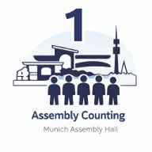

Microphone Service Tool
Tool for planning microphone assignments, shifts and support during meetings and events.
Open ToolBrowser-based tools for planning, scheduling and internal coordination.
Tool for planning microphone assignments, shifts and support during meetings and events.
Open Tool
Counting tool for one-day assemblies with counting slips, printable forms and a compact attendance summary.
Open ToolCounting tool for three-day regional conventions with day overview, slips and attendance summary.
Open ToolPublic Talks Coordination tool for searching congregations, speakers, outlines and contact details from imported data.
Open Tool